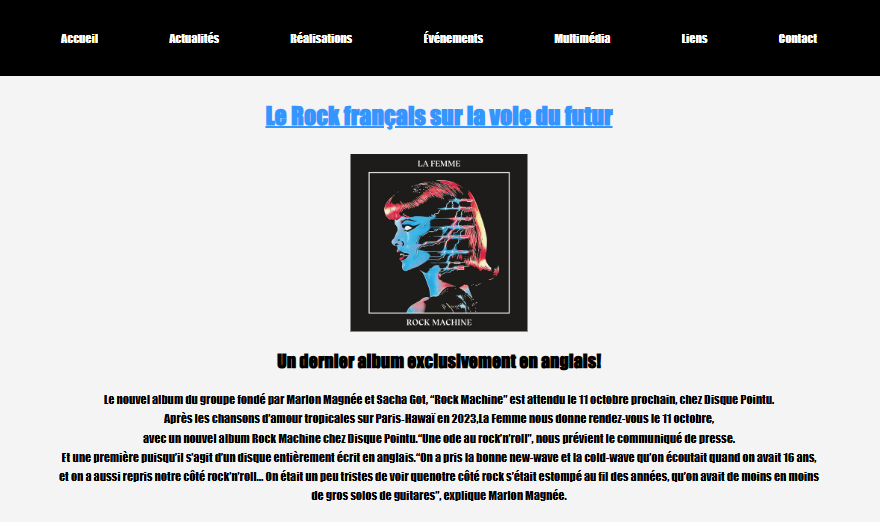
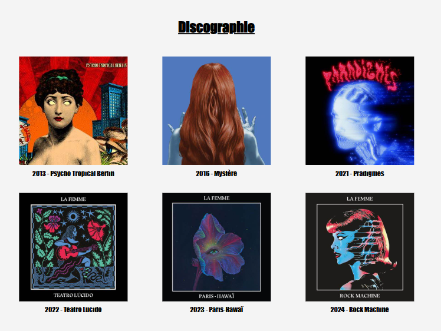
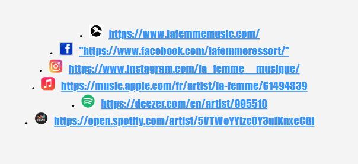

Conception
La conception du site s’est appuyée sur :
- Un design minimaliste inspiré de l’univers artistique de La Femme : utilisation de couleurs vives et contrastées, typographie moderne, et visuels évocateurs.
- Une navigation intuitive pour permettre aux utilisateurs de trouver rapidement des informations sur le groupe, comme la discographie ou les prochaines dates de tournée.
- Une structure claire en respectant les bonnes pratiques d’ergonomie web, avec une mise en page adaptée aux différents types d’écrans (responsive design).

Technologies Utilisées
HTML5 : pour structurer les pages du site.
CSS3 : pour le stylisme, les animations légères et la mise en page responsive.

Contexte de Réalisation
Ce projet a été réalisé dans le cadre de la spécialité Développement Web à la plateforme École du Numérique. Il avait pour objectif :
- D’acquérir et de mettre en pratique les bases du développement front-end.
- De découvrir les étapes de conception et de réalisation d’un fan site web complet, de l’idée initiale au rendu final.
- D’intégrer une dimension artistique et thématique en lien avec un sujet passionnant.
Ce que j'ai réalisé
Voici les tâches spécifiques que j’ai menées à bien :
- Création de la structure des pages : Page d’accueil, pages secondaires (biographie, discographie, galerie photo, actualités).
- Mise en page : Utilisation de CSS pour un design responsive et harmonieux, respect de l'identité visuelle.
- Optimisation : Implémentation d’un design responsive pour une navigation fluide sur ordinateurs, tablettes et mobiles.
- Ajout de fonctionnalités interactives : Menu de navigation avec hover, liens externes vers des plateformes de streaming, etc.
